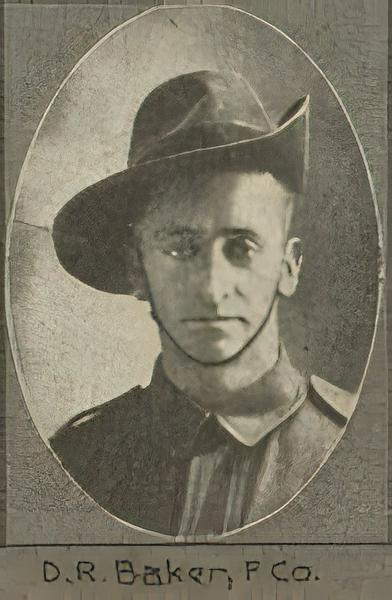

Hello and welcome

(Photograph courtesy of : John Oxley Library,
State Library of Queensland [Image number:
702692-19141024-s0023-0027])
This year is the centenary of the birth of the ANZAC legend. As
such, many people, particularly young people, are looking for ways
to connect with people of that period and inparticular, those who
created the ANZAC legend.
This site presents the letters of Douglas Raymond Baker, who came
from Gympie, Queensland, Australia. He enlisted in August 1914 and
during the years that followed, he wrote letters and post cards to
his family at home. In them, he describes much of the goings-on of
the life of an ANZAC, his feeling and opinions, and experiences
while visiting his relatives in England during leave.
They start from the beginning of basic training in Brisbane in
August 1914 and end in May 1918.
They are offered here so that others may get an understanding of
life as an ANZAC and get a sense of what life on the battlefield was
like.
From the menu on the left, read the Introduction to set the scene.
Then, to start reading the letters, click on Letter and Post Cards
in the menu on the left. All the letters are searchable using the
search bar at the top right of this page.
Introduction
By Douglas Richard Baker (son of Douglas Raymond Baker)
These are copies of letters written by my father Douglas Raymond
Baker during the First World War (1914-1918) to his family in Gympie.
I have three thick exercise books in which the letters were copied in
hand writing by my Aunt Alice, his sister. I understand that this was
done so his letters could be sent on to other members of the family. I
don’t know if the originals are still in existence, probably not.
In the early letters Alice has not included the name of the person
they were written to but later she writes at the beginning, “Letter to
Dot”, “Letter to Mother”, etc. and later still copies the original,
“Dear Al”, “Dear Mag”, etc.. Likewise the endings are often not laid
out fully as we would do but Al may have done this or Dad may have
been saving space on the page.
Some letters are slightly out of date order in the books but as most
of these are around the time his father died I have put them in the
correct order as this is crucial to understanding the sense of the
contents. A lot will be missing – many, many ships were sunk but
thanks to Aunt Alice we have these copies of the ones that did get
through.
Where Dad used brackets in a letter I have used [ ] style and where I
have made any comment or explanation I have used ( ) and Italics.
Where he uses the word “gay” it is used in the true sense, bright,
happy, carefree, etc., This is the original meaning of the word before
it became associated with the homosexual community.
The amounts of money are, of course, in Pounds, shillings and pence
but as these are out of date and we have no pounds sign in the
computer I have written them in, sometimes showing the decimal
equivalents. One Pound equalled $2, one shilling equalled 10 cents and
one penny equalled a little under one cent. After a while I stopped
putting the equivalents in as they had cno significance unless you
knew the relative cost of things then and now. A shilling – equivalent
to ten cents might actually alent to ten cents might actually buy buy
ten or twenty dollars worth of goods now.
Abbreviations and terms
| Abbreviation |
Term |
| Coy |
Company(part of a Battalion) |
| Batt. |
Battalion |
| Col. |
Colonel |
| Sergt. |
Sergeant |
| Capt. |
Captain |
| Lieut. |
Lieutenant (pronounced “Lef-tenant”) |
| Q.M. |
Quarter Master |
| Comp. |
also Company |
| P.C. |
Post Card (not Personal Computer!) |
| C.B. |
Confined to Barracks (leave stopped as a punishment) |
| Big hits |
Top ranked officers |
| Brass hats |
Top ranked officers |
| Dry canteen |
Bar and/or cafeteria, etc. where no alcohol is served |
| Wet canteen |
Bar and/or cafeteria, etc. where alcohol is available |
| Sapping |
digging a tunnel or deep trench to approach or undermine an
enemy position |
| L. Horse |
Light Horse |
| Good nick or great nick |
Good health |
| Bonsorful |
Wonderful, marvellous. (in 2009 speak, “awesome”, “cool”) |
| M. G. S. |
Machine Gun Section |
| Territorials |
Soldiers of the English Volunteer Reserve |
| Terriers |
Territorials |
| Bomb |
Unless dropped from an aeroplane these would have been Mills |
| Bombs |
An early version of the hand grenade |
| Blighty |
England |
| Duke |
Dad’s/family’s dog |
| O.R. |
Orderly Room |
Additional Comments by Ian Stuart Baker (son of Douglas Richard
Baker)
As the grandson of the Douglas Raymond, I'd like to share some
thoughts with modern readers. Apart from the language issues that my
Dad highlights, it would also help to recognise that in Grandfathers
day, the letter was the only means of international communications for
average people (telegrams were expensive and used rarely and
international telephone calls, rarer still). That's why these letters
are so important and why their content gives us window into their
lives.
From discussions with my Dad, it has came to light that the content
of letters to his direct family deliberately leave out much of the
dreadful suffering and drudgery experienced by the diggers. This
intentional self-editing was intended to allay the fears and concerns
of those at home, inparticular, his mother and sisters.
Finally, let me express a debt of thanks to Great Aunt Alice for
diligently transcribing the original letters for without this effort,
we would not have the material we do today. Also, my gratitude to my
father for his work transforming the hand-written script into a typed
paper record and then into electronic format, making my part in this
infinitely easier.